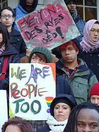
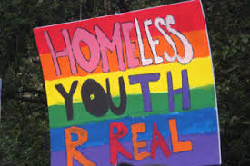
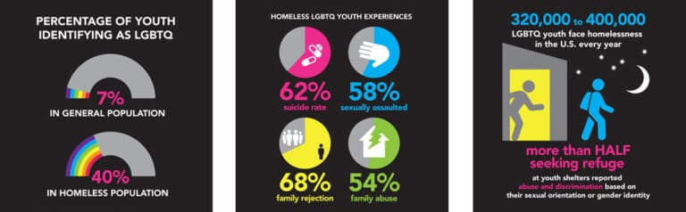

For this final project I chose an issue that is close to my heart, but also shaped who I am. The issue I am referring to is homelessness and housing insecurity amoungst LGBT youth, this is a topic i know all too well because I was apart of that statistic from the age of 18 to 21. I am going to walk you through my experience, then we're going to get into some statistics, and to end our discussion I will provide you with some resources that may help anyone you know facing housing instability and homelessness.
This first picture is of me and my girlfriend when we were 18 years old, we met at the same Independent Living Home called Mercy Center. It was essentially a smaller slightly better shelter for youths without children ages 16-21, I was one of eight girls there we had to work, figure out public trnasportation, and follow the rules of the house in order to stay there. It was the first of many shelters that I would live in. Through this shelter I was able to connect with other unhoused LGBT youth, for the first time I felt safe and at peace. Although my time there wasn't as long as I'd hoped so I sucked it up and I asked my mother to live with her again even though I knew I was goingback into a toxic household. Unfortunately that arrangement didn't last very long either, my mother is Roman Catholic and extremely homophobic so even though at the time I was out as Bi-Sexual, at home I was in the closet. Over the course of a few months me and my best friend started developing deeper feelings for each other and I ended up coming out for a second time as a lesbian to everyone except my mother. Since we were both having trouble at home I started sneaking my girlfriend into my house so that we could be together. That quickly backfired when my mom suddenly knocked at my bedroom door for the first time in months, I scrambled to hide my my girlfriend in the closet before opening the door but it didn't work. I was forced to come out of the closet when my girlfriend was found in mine, my mother was furious and her anger was getting close to violence. That was the night I was disowned I was told I no longer have a mother; it was gut wrenching but I wasn't surprised so yet again I found myself homeless again at 19 only this time I had to go to DSS shelters that were riddled with bedbugs and all the women I lived with very extremely dangerous. Even though me and my girlfriend don't regret living our truth, our lives were put in danger countless times and our education was set back over half a decade just because we loved each other. The amount of queer youth I've met with similar stories is stagerring, we were children forced into unimaginabley hard and sometimes dangerous situations with little to no help from family or government resurces.
Let me ask you guys a few questions, do you know the percentage of homeless queer youth in our country?, do you know what percentage of queer youth face familial rejection?, lastley do you know how many queer youth seek shelters reporting that they have been abused or discriminated against? Well lucky for you I have all the answers to these questions. According to Rescuemissionalliance.org the percentage of homeless queer youth in our country is 40%. The percentage that face familial rejection is 68%, and the number of kids in these shelters reporting abuse and discrimination is between 320,000 and 400,000. These numbers are abismal! As a person who falls under this statistic I am here to say that they are real, far too many children are cast aside when their parents or guardians discover that they are queer. There are numerous reasons as to why a queer youth can be disowned from family culture, to religion, homophobia, etc. In this city alone I can't begin to count how many homeless obviously queer youth I have seen on the streets, and unfortunately most inner city shelters are too dangerous to stay in so they choose to stay on the street even though it's just as dangerous. Queer youth faces an extremely disproprtionate amount of discrimination and abuse compared to our straight/cis gender counterparts. All that being said I feel like there are certain solutions that can help this growing issue. I want to eventually start my own nonprofit to allow queer youth to gain either free or extremely affordable certifications in the field of computer science, for the most part shelters focus on helping you make quick money so that they can get you in an apartment and get a new person off their waitlist into a bed. They don't necessarily help you think long term, and because of that most people end up back on the street. With a trade under your belt like computer science you create the opportunity for longevitiy thus creating a brighter future. Another solution would be to create more spaces and shelters both privately funded and government funded specifically for queer youth, there are plenty of coed or single gender shelters but in my expeiences those blurred lines don't allow for very much inclusivity if anything it puts queer youth at more of a risk of being abused and discriminated against by roommates and staff alike. The list of possible solutions can go on and on, but reality can be harsh and cruel so what I ask of you readers is to take a moment and look at the resources I provide and see what housing options there are for queer youth. I hope that when you see their options it may inspire one of you to act and search for your own solutions to this ever growing problem.
 